A complete OBS overlay system — six scenes, live alerts, chat, goals, and a guided customiser. No subscriptions, no cloud account, no image editing.
| 1 · Setting up Three steps, about five minutes | p5 |
| 2 · Adding the overlay to OBS The automatic way and the manual way | p6 |
| 3 · The six scenes What each one is for | p8 |
| 4 · The dashboard How it is laid out | p12 |
| 5 · Two things that will save you time The i button, and LIVE vs PREVIEW | p14 |
| 6 · Live Control What you use while streaming | p17 |
| 7 · Theme Colours, glow, motion, performance | p19 |
| 8 · Branding Your logo and artwork — all optional | p21 |
| 9 · Scenes Wording on the full-screen cards | p23 |
| 10 · Alerts Wording, timing, position, effects | p24 |
| 11 · Chat and Goals | p26 |
| 12 · Widgets Placement, scale, recent events | p28 |
| 13 · OBS Setup page | p29 |
| 14 · Connecting Twitch or YouTube Optional — it works by hand without it | p30 |
| 15 · Undoing changes Three levels of reset | p33 |
| 16 · Going live — checklist | p34 |
| 17 · If something looks wrong | p35 |
You need OBS Studio and a Windows PC. Everything else is in the folder you were given. The package installs one small helper (Node.js) the first time you run Setup, and nothing else.
Three steps. You do this once.
C:\Users\YourName\Nightwire.
Do not run it from inside the ZIP, and do not leave it in Downloads where it may be cleaned up.Setup.bat.
It checks for Node.js and installs it if needed, starts the overlay server, sets it to start
automatically when you sign in, and opens the dashboard in your browser. Say yes to any
Windows permission prompt — that is the Node.js installer.| File | What it does |
|---|---|
Setup.bat | First-time install. Safe to run again if something breaks. |
Start Server.bat | Starts the overlay and opens the dashboard. |
Stop Server.bat | Stops the overlay. Your settings are kept. |
Server Status.bat | Tells you whether it is running, and on what address. |
The dashboard lives at http://127.0.0.1:8787/dashboard.html. Bookmark it.
That address only works on this PC — that is deliberate, and it is what keeps your controls private.
The fast way takes about a minute and wires up all six scenes for you.
obs\Nightwire.json from the package folder.
Every scene, browser source, size and position comes in already set up.If you would rather build your own scenes, add a Browser source in each one, set it to 1920 × 1080, and paste the matching address. The OBS Setup page in the dashboard has a copy button beside every one of these.
| Scene | Address |
|---|---|
| Gameplay | http://127.0.0.1:8787/scenes/gameplay.html |
| Starting Soon | http://127.0.0.1:8787/scenes/starting-soon.html |
| Just Chatting | http://127.0.0.1:8787/scenes/just-chatting.html |
| BRB | http://127.0.0.1:8787/scenes/brb.html |
| Ending | http://127.0.0.1:8787/scenes/ending.html |
| Offline | http://127.0.0.1:8787/scenes/offline.html |
Below, each scene is shown over a stand-in background. Everything grey-blue behind the overlay is transparent in reality — your game or camera shows through it.
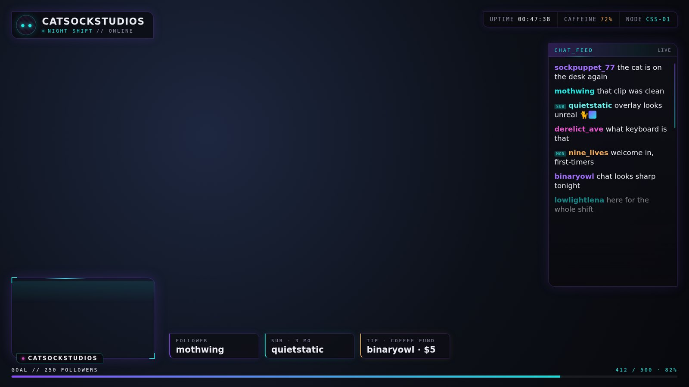
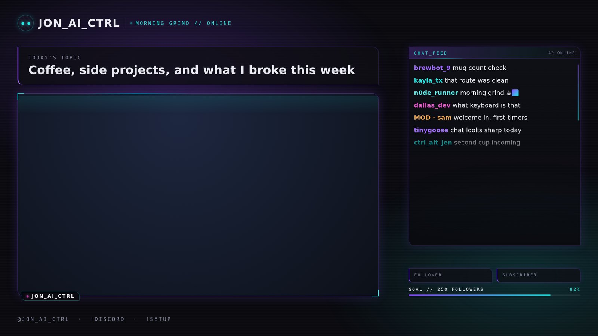
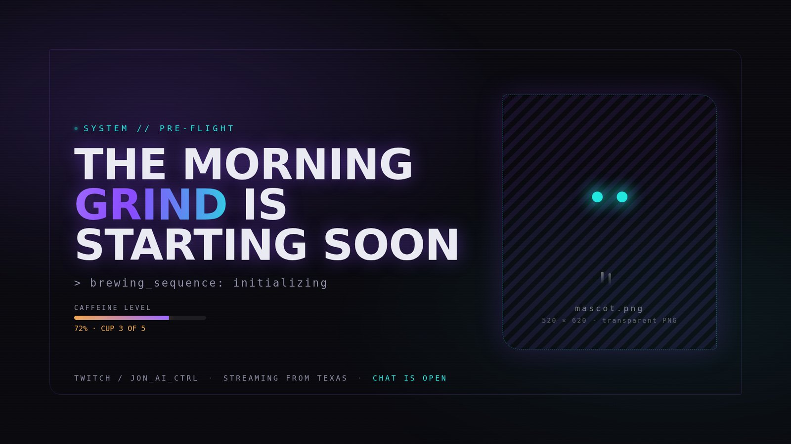
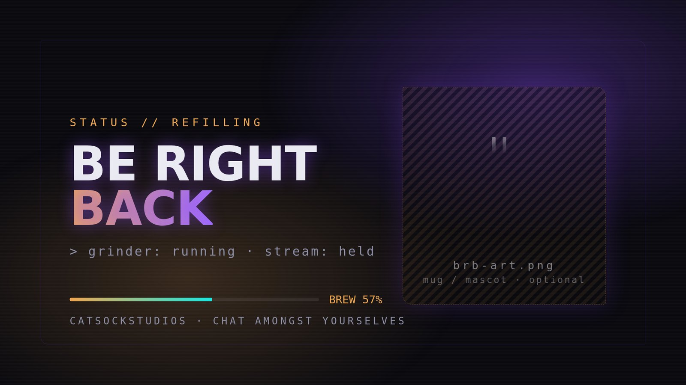
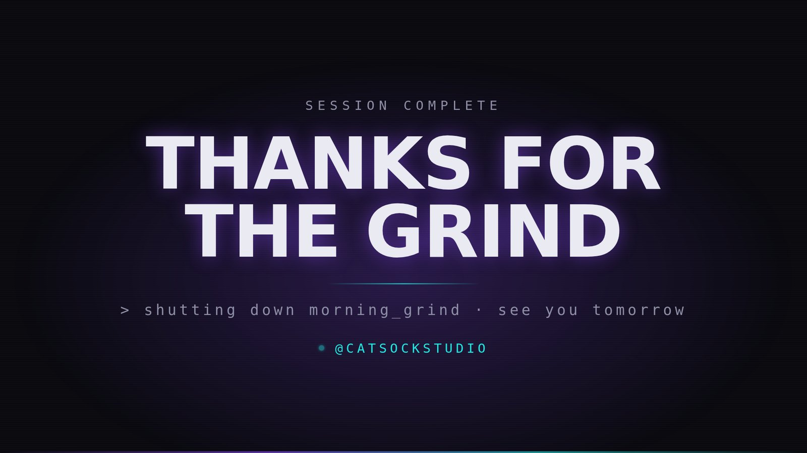
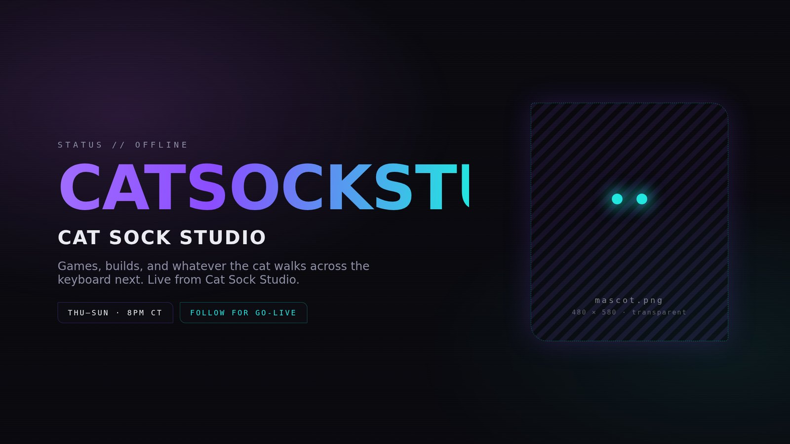
One page, two halves. The left half is what you are looking at. The right half is what you are changing. They work independently.
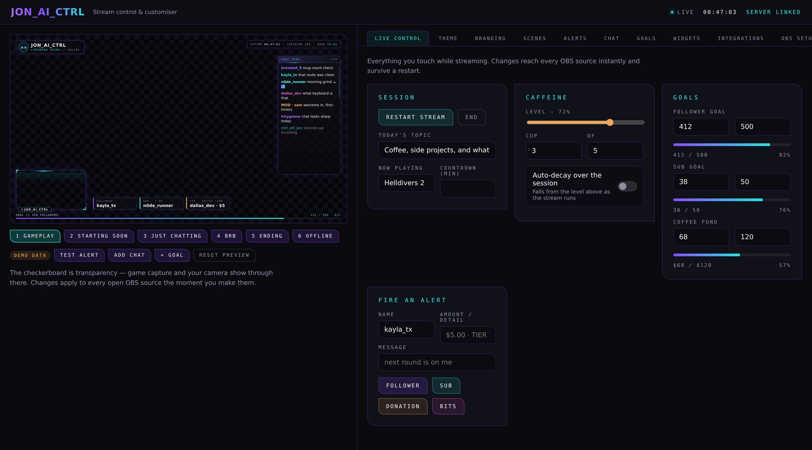
The numbered buttons under the preview choose which scene you are looking at. This is only a viewer; it does not change what OBS is showing. The chequerboard is transparency — that is where your game and camera show through.
The four buttons marked DEMO DATA put fake activity on screen so you can see your settings working: a test alert, a chat message, some progress on a goal.
The tabs across the top choose what you are editing. Most settings are global: an alert looks the same on every scene, and a colour change applies everywhere. Only the Scenes page is tied to the scene selected on the left.
Every page puts the everyday controls first. Anything folded under ADVANCED is optional — you never have to open it.
Read this before you start changing settings. Both answer the same question: is this control broken, or am I looking in the wrong place?
Every control has a small i beside it. Press it and an explanation appears in the panel under the preview — what the control changes, and, where it matters, what it does not.
That second half is the important one. Most settings only show up in certain places. Chat position does nothing on the BRB card, because BRB has no chat. Background brightness does nothing on Gameplay, because Gameplay is transparent. Half the recent-events controls do nothing while Activity is set to TILES. None of that is broken — but you cannot tell by looking, so the i tells you.
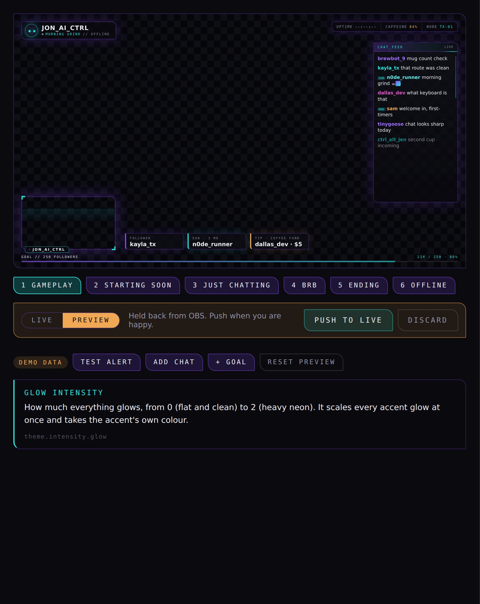
The switch under the scene buttons decides where your changes go.
| Mode | What happens when you change something |
|---|---|
| LIVE | It reaches OBS immediately. This is the normal setting. |
| PREVIEW | It shows in the preview only. OBS keeps showing what it showed before. |
In PREVIEW, two buttons appear. PUSH TO LIVE sends everything you have changed to OBS in one go and returns you to LIVE. DISCARD throws it away.
The page you keep open while streaming. Four cards.
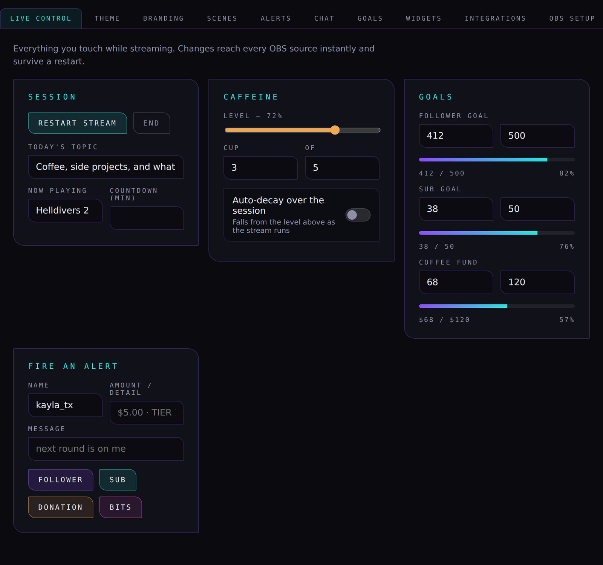
START STREAM tells the overlay you have gone live. It turns the status dot green, starts the uptime clock, and begins caffeine decay if you use it. It does not start your OBS stream — you still do that in OBS. Once you are live the button reads RESTART STREAM; pressing it sets the clock back to zero. END returns you to offline.
Today's topic and Now playing appear on the overlay as you type. Countdown sets the timer on the Starting Soon card, in minutes. Leave it blank for no countdown.
A running joke that doubles as a stream-length indicator. Set the level and which cup you are on. Auto-decay makes it fall gradually as the stream runs, so you do not have to touch it.
Current and target for followers, subs and the coffee fund. The goal rail across the bottom of the Gameplay scene follows whichever goal you nominate on the Widgets page.
For when something actually happens and you want to acknowledge it by name. Type the name, and an amount or tier if it applies, then press the matching button. This also updates the activity tile for that type on the Gameplay scene.
| Button | Also updates |
|---|---|
| FOLLOWER | The follower tile |
| SUB | The sub tile |
| DONATION | The coffee-fund tile |
| BITS | Nothing — alert only |
The look of the whole package, in one place.
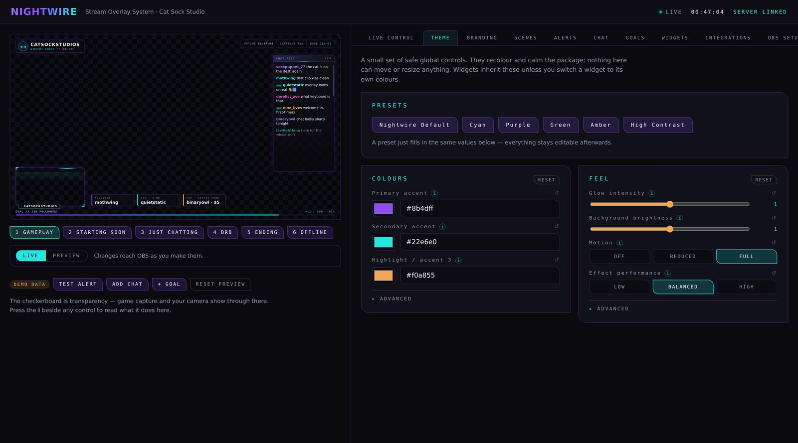
Six one-click looks. A preset sets the colours and leaves everything else alone, so it is a starting point rather than a reset — change any colour afterwards and your change sticks.
Primary is the main accent, used for the brand bar, borders and most glows. Secondary is the contrast accent, used for live indicators and goal fills. Highlight is for money — tips and the coffee fund. Background and text colours are under ADVANCED and rarely need changing.
| Control | What it does |
|---|---|
| Glow intensity | How much everything glows. 0 is flat and clean; 2 is heavy neon. |
| Background brightness | How dark the full-screen cards are. |
| Motion | Full is everything. Reduced stills most animation. Off stops all of it. |
| Effect performance | Caps how expensive the alert effects are allowed to be. |
Your own artwork. Every slot is optional.
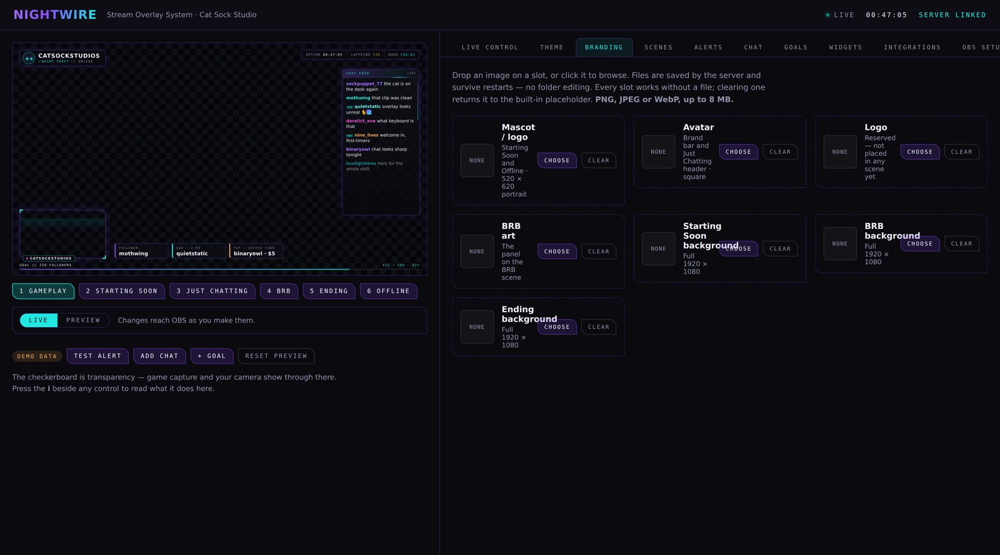
The package is designed to look finished with no artwork at all — every slot has a built-in placeholder drawn in code. Adding your own is an upgrade, never a requirement.
Drop a file on a slot or click it to browse. It is copied into the package and remembered. Clear puts the built-in placeholder back.
| Slot | Where it appears | Suggested size |
|---|---|---|
| Mascot / logo | Starting Soon and Offline | 520 × 620 portrait |
| Avatar | Brand bar, and the Just Chatting header | Square, 256 × 256 |
| BRB art | The panel on the BRB card | 570 × 610 portrait |
| Starting Soon background | Behind the Starting Soon card | 1920 × 1080 |
| BRB background | Behind the BRB card | 1920 × 1080 |
| Ending background | Behind the Ending card | 1920 × 1080 |
| Offline background | Behind the Offline card | 1920 × 1080 |
PNG, JPEG or WebP, up to 8 MB. PNG with transparency is best for logos.
The wording on the full-screen cards.
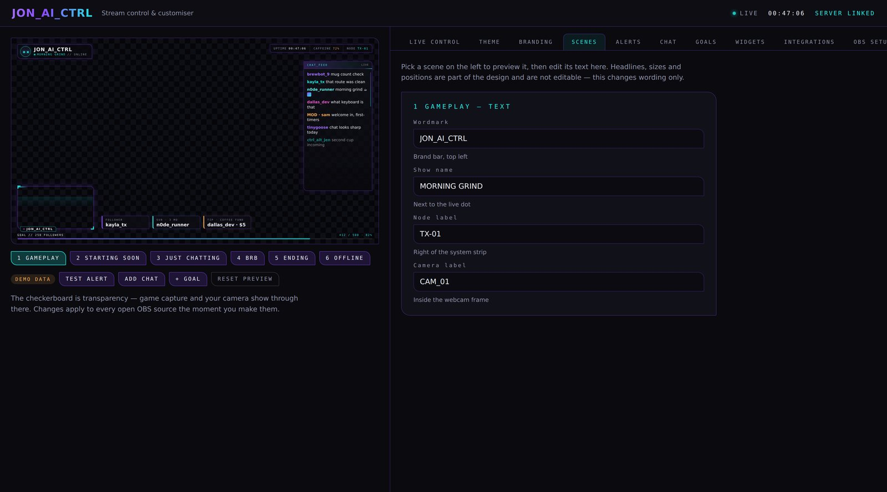
This is the one page tied to the scene selected in the preview. Pick a scene on the left, and the fields here change to that scene's wording — headline, sub-line, schedule, tagline.
Sizes and positions are part of the design and are not editable. That is deliberate: it is what stops the package from being broken by accident. Long text shrinks to fit rather than overflowing.
Six types, each with its own wording, timing, position and effects.
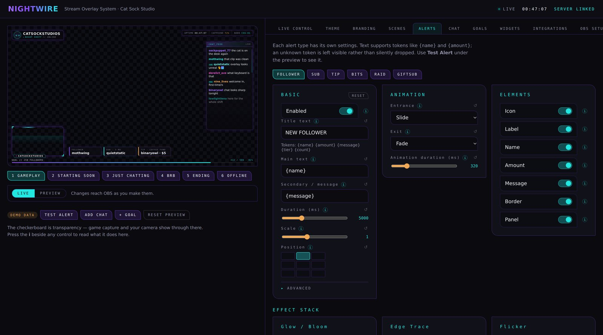
Alert text uses tags that get filled in when the alert fires:
| Tag | Becomes |
|---|---|
{name} | The person's name |
{amount} | The tip amount or bit count |
{message} | Their message, if any |
{tier} | Sub tier |
{count} | Raid viewers, or number of gift subs |
So a title of COFFEE FUND · {amount} becomes COFFEE FUND · $5.00.
A tag you mistype is left on screen as written rather than vanishing, so you can see the error.
Duration is how long the alert stays up. Scale makes it bigger or smaller — the package will not let you scale it off the edge of the screen. Position is a nine-square grid; placement is preset-only, which is what guarantees nothing ends up half off-screen.
Switch off any part you do not want: the icon, the label, the name, the amount, the message, the border, or the whole panel behind it. Turning the panel off gives you floating text with no box.
Nine effects you can stack. Each has its own settings.
| Effect | Cost |
|---|---|
| Glow / Bloom | Low — always on, whatever the performance setting |
| Edge Trace, Flicker, Scanlines | Low |
| RGB Split, Ghosting, VHS Slice | Medium — needs BALANCED or HIGH |
| CRT Distortion, Noise | High — needs HIGH |
If you switch on an effect your performance setting does not allow, the page tells you why it is not running rather than silently ignoring it.
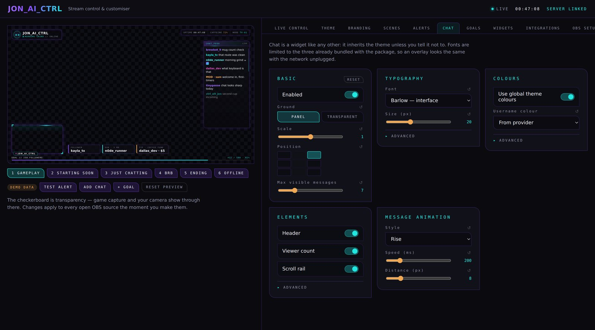
Newest messages are at the top; older ones fade out beneath. Set the font, size and weight, how many messages show at once, and whether badges and timestamps appear.
Ground decides what sits behind the messages — a panel, individual bubbles, or nothing at all for text straight over your game.
Username colour offers a different colour per person, one accent for everyone, or plain theme text.
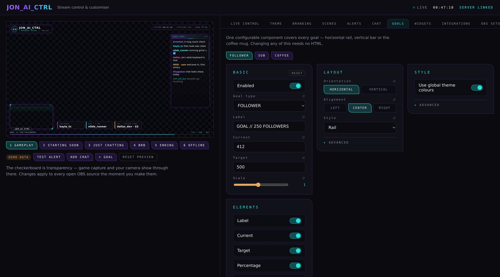
Each goal can run across or upright, and can be drawn as a thin rail, as segments, or as the coffee mug. Turn off any part — label, value, target, percentage, icon.
Numbers themselves live on Live Control, so you are not digging through the customiser mid-stream to update a follower count.
Where each piece sits, and how big it is.
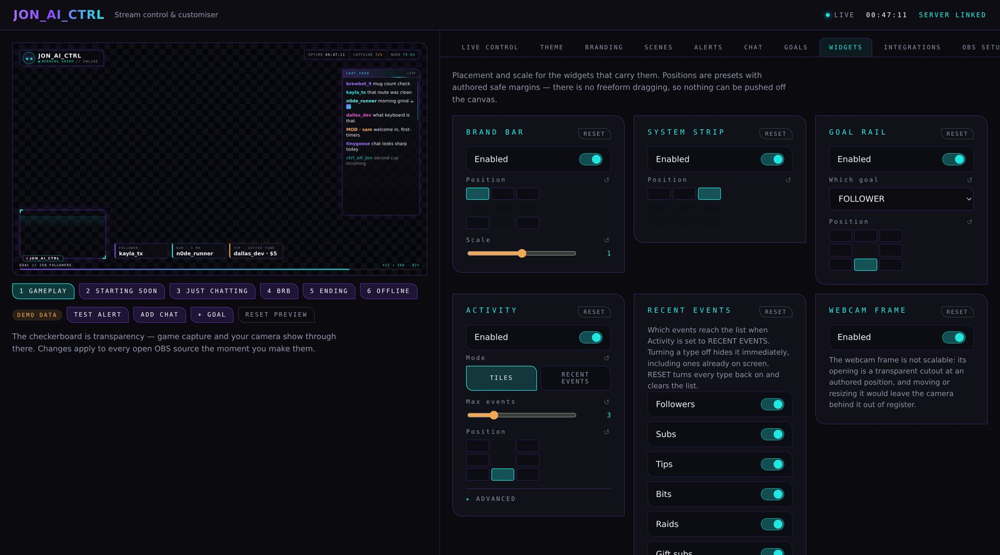
Each widget can be switched off, moved to one of nine preset positions, and scaled within a safe range. There is no free dragging — presets keep safe margins so nothing ends up under a Twitch overlay or off the edge.
Set Activity → Mode to Recent events and the three tiles become a running list of who just followed, subbed, tipped, cheered or raided. Choose how many show and which kinds count.
The list covers the current session only — it is never written to disk, so restarting starts it fresh rather than replaying yesterday.
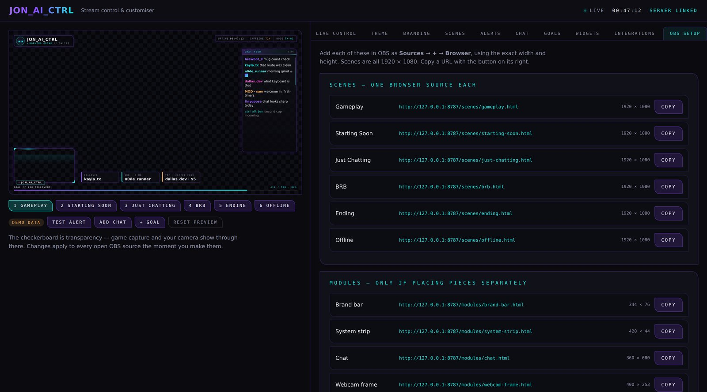
Keep this page open while you build scenes by hand. It lists every scene and every individual widget, with the exact width and height to give each browser source.
The individual widget addresses are there if you want to build your own layout rather than use the full-scene overlays — for example, chat on its own in a corner of a scene you designed yourself.
Optional. Everything works by hand without this — connecting just means you stop typing names in.
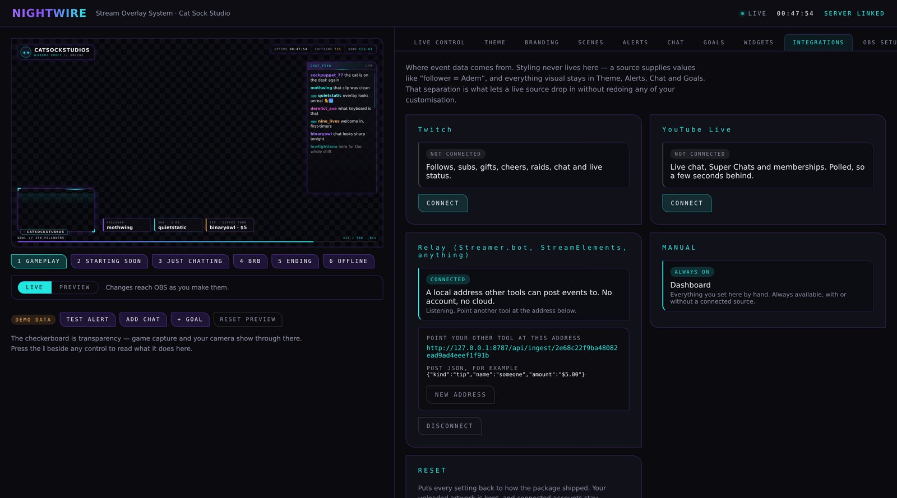
| Source | Supplies |
|---|---|
| Twitch | Follows, subs, resubs, gift subs, cheers, raids, chat, and live status |
| YouTube Live | Live chat, Super Chats, memberships, and live status |
| Relay | Anything else that can send a message — see below |
| Manual | Everything, by hand. Never switched off. |
twitch.tv/activate — and type the code in.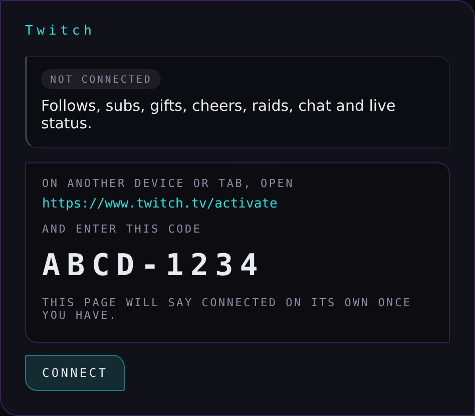
Alerts fire on their own. Chat fills in by itself. The uptime clock starts when you go live and stops when you end, so you no longer press START STREAM.
Some fields on Live Control grey out — your follower count, for example. That is deliberate: while Twitch is reporting a number, letting you type over it would be a lie, because the next event would overwrite whatever you typed. Disconnect and they become editable again.
The relay is a local address that any other tool can send events to: Streamer.bot, StreamElements, Streamlabs, a Kick bridge, a Stream Deck button, or a script you wrote. If it can send a web request, it can drive your overlay.
The address is on the Integrations page, ready to copy. Anything sent to it appears exactly as if it came from Twitch. NEW ADDRESS changes the key, which stops any tool you set up earlier until you paste the new one in.
DISCONNECT forgets the account. Note that Reset everything does not sign you out — settings and accounts are kept separately on purpose.
Three levels, smallest first. You cannot get permanently lost.
| Control | Undoes |
|---|---|
| The small ↺ beside a setting | That one setting |
| RESET on a card | Everything on that card |
| Reset everything on Integrations | All settings — but never your uploaded artwork |
The dashboard will tell you. If the overlay server is running an older version than the files on
disk — which happens after an update, because the server keeps running from when you signed in —
a yellow banner appears across the top of the dashboard telling you to restart it. Run
Stop Server.bat, then Start Server.bat.
Start Server.bat.Press END on Live Control to go back to offline, and switch OBS to the Offline scene. Leave the server running — it costs nothing and will be ready next time.
Right-click the browser source and choose Refresh. If it is still blank, check the server
is running with Server Status.bat. A source that fails will normally display the reason
on screen rather than going blank, so read what it says.
The camera source is above the overlay in the source list. Drag it below. The overlay has a transparent hole cut for it and is meant to sit on top.
On the Gameplay scene, game capture is a full-screen, opaque source. If it is listed above the camera, it hides the camera wherever the two overlap. Drag the camera above the game capture — the source list should read Overlay, then Camera, then Game Capture, top to bottom.
Run Start Server.bat. If it says the port is already in use, the server is already
running — refresh the dashboard instead.
Look for a yellow banner at the top of the dashboard. It means the running server is older than
the files on disk, and it will tell you to restart. Run Stop Server.bat then
Start Server.bat.
The package uses three web fonts and falls back to system fonts if it cannot reach the internet. Headlines shrink to fit rather than overflowing, so it will still be readable — it will just look slightly different until you are back online.
Theme page: set Effect performance to LOW and Motion to Reduced. If it persists, your OBS canvas may be running at a higher resolution than your PC can encode comfortably — that is an OBS setting, not an overlay one.
Press the i beside it. Most settings only apply in certain places, and the explanation says where — chat settings do nothing on a card with no chat, background brightness does nothing on the transparent scenes, and the recent-events controls do nothing while Activity is set to TILES.
Then check the switch above the demo buttons. If it says PREVIEW, your changes are being held back on purpose and only the preview is showing them. Press PUSH TO LIVE, or switch back to LIVE.
Check the Integrations page says CONNECTED rather than WAITING — if it still says waiting, the code was never entered, so press Connect and try again. If it says PROBLEM, the message underneath names the cause. A source can also be connected but missing one kind of event, which it will say in the same place; that means a permission was not granted, and disconnecting and reconnecting fixes it.
Integrations page, Reset everything. Your uploaded artwork survives. If the package itself
seems damaged, re-run Setup.bat.